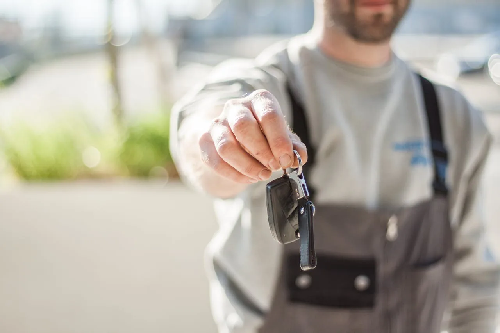
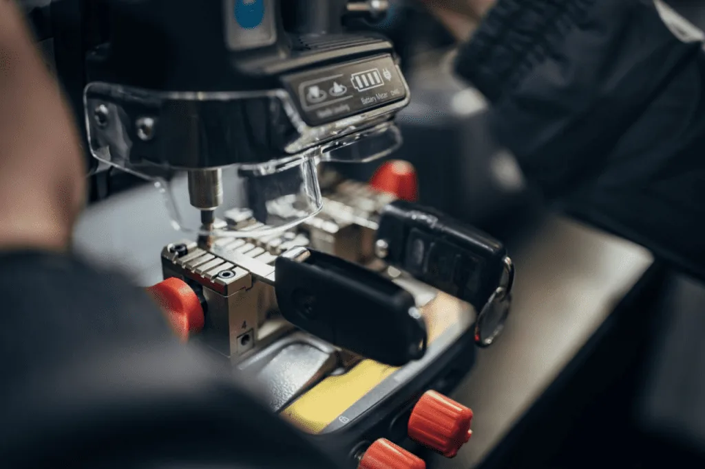
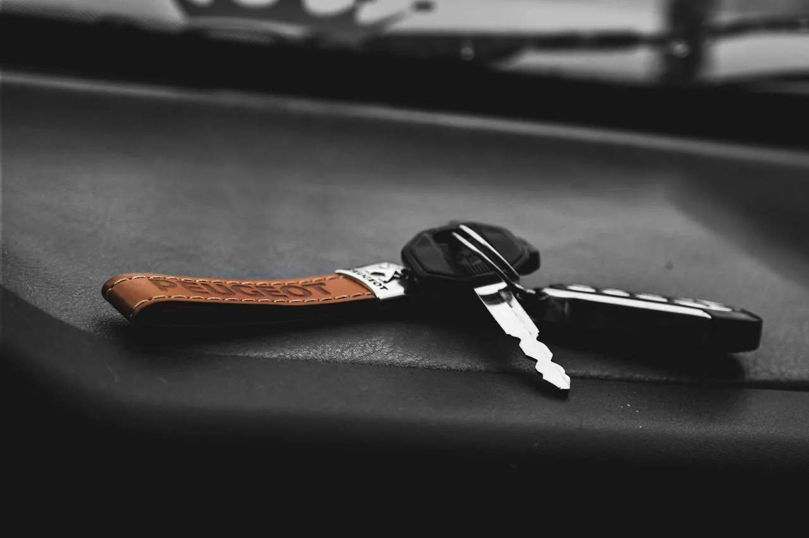
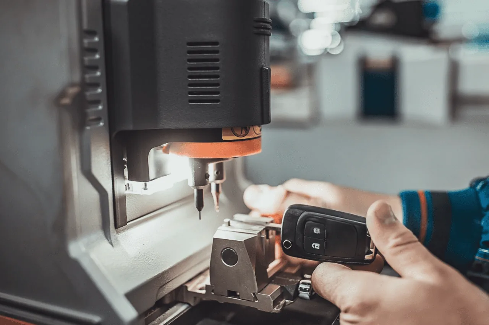
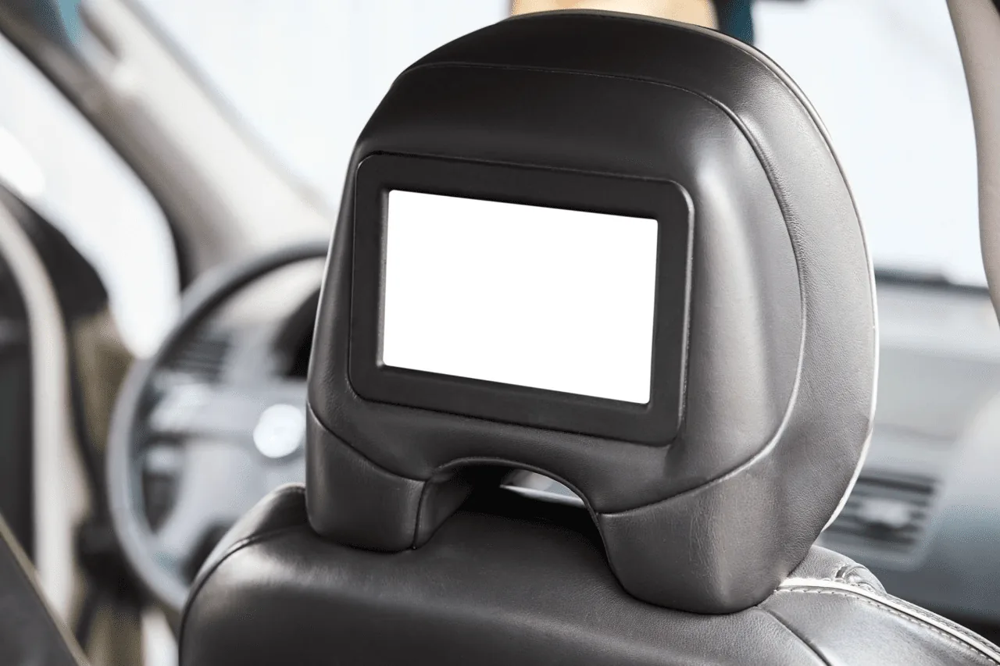
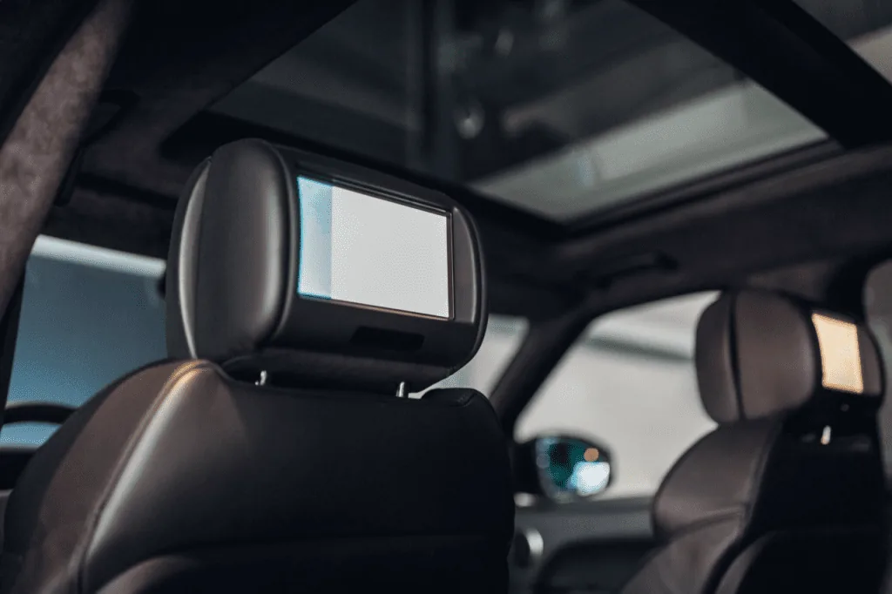
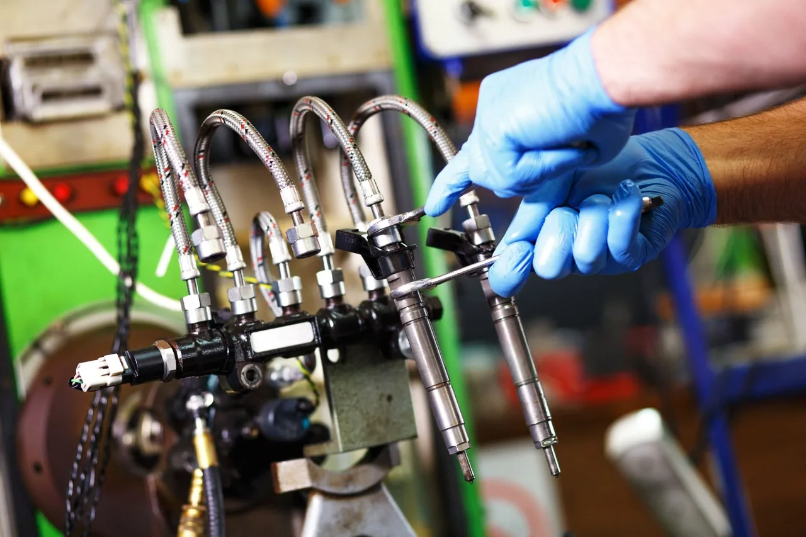

Perte, vol ou simple double : nos techniciens mobiles fabriquent et programment votre clé sur place. Service disponible Mar–Sam en Haute-Savoie.

Duplication, dépannage d'urgence, réparation ou diagnostic — nous intervenons sur place, sur toutes marques.

Copie précise et programmation électronique, même pour les modèles récents avec transpondeur, télécommande ou système mains-libres.

Aucune clé disponible ? Nous ouvrons, décodons la serrure et reprogrammons une clé neuve sur place. Solution All Keys Lost.

Coque cassée, bouton HS, lame tordue ? Nous remplaçons les composants en conservant votre électronique d'origine.

Valise multi-marque pour moteur, ABS, airbag, calculateur. Reprogrammation injecteurs et effacement codes défauts.

Autoradios, caméras de recul, radars de stationnement, alarmes. Installation propre et garantie sur tous véhicules.

Bloqué sur un parking à Cluses, Annecy ou Annemasse ? Notre atelier mobile vous débloque en moins d'1h, jour et nuit.
Plus rapide qu'en concession, moins cher qu'un remorquage, plus proche de vous qu'un garage classique.
Experts en reproduction de clés, nous intervenons sur toutes marques avec un matériel professionnel certifié.
Garantie 12 mois. Nous supprimons l'ancienne clé perdue de la mémoire du véhicule pour votre tranquillité.
Atelier mobile entièrement équipé. Intervention à domicile, au travail ou sur la route. Vous repartez sans attendre.
Calculateur de prix en ligne, devis garanti, facture détaillée. Le prix annoncé est le prix payé.
Nous couvrons toute la Haute-Savoie et la Savoie : Cluses, Annecy, Annemasse, Thonon, Sallanches, Chambéry…
Carte bancaire (Visa/Mastercard) ou espèces directement au technicien. Facture remise pour remboursement assurance.
Appelez le 07 46 57 17 03 ou utilisez le calculateur. Indiquez marque, année et localisation.
Vous recevez un prix garanti par SMS ou téléphone. Aucun frais caché, tout est inclus.
Le technicien arrive avec son atelier mobile, fabrique et programme votre clé devant vous.
Tests de fonctionnement, paiement sur place, facture remise. Garantie 12 mois incluse.
Note moyenne 5/5 basée sur des avis clients recueillis sur Google, Instagram et directement après intervention. Retrouvez-nous sur Google Business Profile.
"J'avais peur de rester bloqué sans clé de secours. Le technicien est venu et m'a fait un double rapidement. Excellent rapport qualité-prix."
"Service impeccable, équipe très réactive. Même sans ma clé originale, ils ont réussi à m'en refaire une. Ça m'a sauvé la mise !"
"J'ai perdu ma clé de voiture, je pensais que ça allait me coûter une fortune chez le concessionnaire. Auto-key m'a fait un double en quelques heures, à un prix bien plus intéressant."
Un savoir-faire reconnu en Haute-Savoie, avec plus de 850 clés fabriquées chaque année et une garantie 12 mois.
Équipement professionnel de programmation et diagnostic multi-marques. Formation continue aux systèmes anti-démarrage récents.
Basé à Scionzier (74950), en Haute-Savoie. SIRET 82399004900038, enregistré en France. Nous venons à vous.
Rejoignez les 127 clients qui nous ont noté 5/5. Vos avis sont publiés sur Google et Instagram.
Atelier mobile basé à Scionzier. Déplacement gratuit dans un rayon de 15 km.
Appelez maintenant, un technicien est disponible du mardi au samedi en Haute-Savoie.
Les tarifs démarrent à 49€ pour une clé mécanique standard, 69€ pour une clé avec puce anti-démarrage, 169€ pour une clé avec télécommande et 199€ pour une clé Main Libre ou carte. Le déplacement est inclus dans un rayon de 15 km autour de Scionzier.
Oui. Auto-Key intervient en cas de perte totale de clés sur toute la Haute-Savoie (74) et la Savoie (73). Nous ouvrons le véhicule sans effraction, décodons la serrure, taillons une nouvelle lame et reprogrammons l'anti-démarrage directement sur place.
Oui. Auto-Key est disponible du mardi au samedi pour les urgences clés perdues sans double et les dépannages en Haute-Savoie et en Savoie.
Toutes nos clés sont garanties 12 mois. Nous testons l'ouverture, la fermeture centralisée et le démarrage devant vous avant de valider l'intervention. Nous utilisons des composants de qualité constructeur (OEM) ou équivalente.
De nombreuses assurances incluent une garantie 'Assistance 0 km' ou 'Perte/Vol de clés'. Nous fournissons une facture détaillée et acquittée, indispensable pour faire valoir vos droits au remboursement.